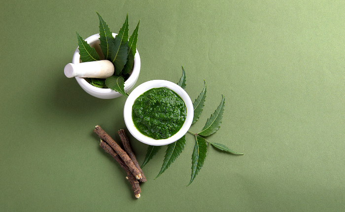

{% extends "layout.html" %}
{% block style %}
<link rel="stylesheet" type="text/css" href="{{url_for('static', filename='style3.css')}}">
{% endblock style%}
{%block content%}
<!-- Herb Browse Section -->
<section class="browse-herb-section load-animate-2">
    <div class="browse-herb-container flex" id="browse-herb-container">
        <div class="herb-button herb-button-0 flex">
            Ashwagandha
        </div>
        <div class="herb-button herb-button-1 flex">
            Brahmi
        </div>
        <div class="herb-button herb-button-2 flex">
            Triphala
        </div>
        <div class="herb-button herb-button-3 flex">
            Neem
        </div>
        <div class="herb-button herb-button-4 flex">
            Tulsi
        </div>
        <div class="herb-button herb-button-5 flex">
            Amla
        </div>
        <div class="herb-button herb-button-6 flex">
            Ginger
        </div>
        <div class="herb-button herb-button-7 flex">
            Turmeric
        </div>
        <div class="herb-button herb-button-8 flex">
            Cumin
        </div>
        <div class="herb-button  herb-button-9 flex">
            Cardamom
        </div>
        <div class="herb-button  herb-button-10 flex">
            Fennel
        </div>
        <div class="herb-button  herb-button-11 flex">
            Licorice
        </div>
    </div>
</section>

<!-- Font Awesome Linking -->
<script src="https://kit.fontawesome.com/b88994d2e3.js" crossorigin="anonymous"></script>
<!-- Script Files linking -->
<script>
    //All herbs data 
    let herbsArray = [
        'Ashwagandha',
        'Brahmi',
        'Triphala',
        'Neem',
        'Tulsi',
        'Amla',
        'Ginger',
        'Turmeric',
        'Cumin',
        'Cardamom',
        'Fennel',
        'Licorice'
    ]

    let historicalSignificane = [

        `Ashwagandha, also known as "Indian Ginseng" or "Winter Cherry," holds a prominent place in Ayurvedic history.Ashwagandha is a famous medicine herb from Ayurveda. In the ayurvedic medicine system, it is also known as "Withania somnifera" and "Indian Ginseng". It is a versatile herb that is talked about as having a nourishing tonic effect like ginseng and various health-promoting effects on the roots and fruits. It belongs to the evergreen shrub of the Solanaceae family. It is native to India as well as the Middle East and Africa too. Ashwagandha root has been used habitually for more than 4000 years and has been used as a medicine for health promotion, disease prevention, treatment, energy enhancement, and nourishing tonic herb. In Ayurveda, ashwagandha is also known as a "rejuvenating drug".
    
    The word Ashwagandha means "smell like a horse" in the Sanskrit language. It is derived from the unique pungent odour from the fresh roots of Ashwagandha. The scientific name suffix "Somnifera" means "sleeping", which means that this herb has a sedative effect. There are species of ashwagandha available in the world due to variations in the soil, climate and many more. It has been cultivated on a large scale for commercial purposes in India since the latter half of the 19th century, becoming a major production area. `,


        ` Brahmi, an ancient script of India, holds immense historical significance due to its pivotal role in the development of written communication and the preservation of knowledge in the Indian subcontinent.

    Originating around the 4th century BCE, Brahmi is believed to be one of the earliest scripts used in India. It was primarily used to write inscriptions on various surfaces, such as stone pillars and cave walls, which were instrumental in disseminating edicts, religious teachings, and administrative information. Most notably, Emperor Ashoka's rock edicts, dating back to the 3rd century BCE, were written in Brahmi, making it a critical medium for the spread of Buddhism and Ashoka's message of non-violence and social justice.
    
    Brahmi's historical significance extends beyond India, as it served as the foundational script for several other writing systems in South Asia, including Devanagari, Bengali, and Tamil scripts. It influenced the development of scripts in Southeast Asia, such as Javanese and Balinese. This profound impact on regional scripts underscores Brahmi's role in shaping the cultural, religious, and linguistic landscape of a vast region.
    
    Furthermore, the decipherment of Brahmi inscriptions by scholars like James Prinsep in the 19th century played a crucial role in unlocking India's ancient history. Brahmi inscriptions have provided valuable historical and epigraphic insights into the Mauryan and Gupta empires, trade routes, social structures, and religious practices of ancient India.`,


        `Triphala, a traditional herbal formulation rooted in Ayurveda, carries profound historical significance as a symbol of India's rich medicinal heritage and an integral part of ancient Indian medicine. Its historical importance is multifaceted, beginning with its ancient origins dating back over two millennia, as documented in texts like the Charaka Samhita and Sushruta Samhita. Triphala's formulation and usage have evolved over centuries, making it one of the oldest documented herbal remedies in the world.
    In the context of Ayurveda, Triphala is considered a cornerstone of this ancient holistic healing system, revered for its multifunctional health benefits that promote balance and well-being. One of its primary historical roles lies in digestive health, with a consistent record of alleviating constipation, enhancing digestion, and purifying the gastrointestinal system. This effectiveness in promoting digestive well-being has solidified Triphala's status as a fundamental remedy in Ayurvedic practice.
    Triphala's historical importance extends beyond its medicinal use; it is deeply ingrained in Indian culture and spirituality. Associated with the concept of purifying both the body and mind, it aligns perfectly with Ayurveda's holistic principles. Triphala has been used in traditional rituals and ceremonies, highlighting its cultural significance and spiritual connection.
    
    Moreover, Triphala's holistic approach to health harmonizes with ancient Indian philosophies, emphasizing the interconnectedness of the body, mind, and spirit. This concept has resonated with individuals and cultures worldwide, contributing to Triphala's global influence and recognition as a symbol of India's contribution to natural medicine and holistic well-being.
    `,


        `Neem, scientifically known as Azadirachta indica, holds immense historical significance deeply ingrained in Indian culture and traditional medicine. With a history spanning thousands of years, neem has played a pivotal role in various aspects of Indian life, earning it the title of "The Village Pharmacy." Its historical importance is evident in several key dimensions.

    First and foremost, neem's use in ancient Indian medicine is well-documented. It features prominently in ancient texts like the Charaka Samhita and Sushruta Samhita, where its therapeutic properties were extensively detailed. Neem has been an integral component of traditional Ayurvedic medicine, addressing a wide range of health issues, from skin ailments to digestive problems. Its versatility and efficacy made it an indispensable part of India's indigenous healing system, contributing significantly to the overall well-being of its people.
    
    Furthermore, neem has a cultural and religious significance that goes beyond its medicinal applications. In Indian culture, neem is often associated with purity and cleanliness. Its leaves, twigs, and oil have been traditionally used for rituals and purification ceremonies. The neem tree is considered sacred in many parts of India, and its presence is believed to ward off negative energies.
    
    Neem's historical relevance extends to agriculture, where it has been used as a natural pesticide and fertilizer for centuries. Its ability to protect crops from pests and enhance soil fertility has contributed to sustainable agriculture practices in India.
    
    `,


        `Tulsi, also known as Holy Basil or "Ocimum sanctum" in botanical terms, holds immense historical significance deeply woven into the cultural, religious, and medicinal fabric of India. This sacred herb, native to the Indian subcontinent, has an extensive and venerable history.

    Historically, Tulsi has been revered for its medicinal properties and is prominently featured in ancient Indian texts, including the Charaka Samhita and Sushruta Samhita. Its primary historical importance lies in its role as a powerful adaptogen, capable of enhancing the body's resilience to stress and promoting overall well-being. Tulsi's therapeutic qualities, including its antioxidant and anti-inflammatory properties, have made it a fundamental herb in traditional Ayurvedic medicine.
    
    Beyond its medicinal applications, Tulsi holds profound religious and cultural significance in India. It is often considered a manifestation of the goddess Lakshmi and is revered as a symbol of purity and divinity. Tulsi is planted in courtyards and temples across the country, and daily rituals involving the worship of Tulsi are performed by millions of devout Hindus.
    
    Historically, Tulsi has been a vital component of traditional Indian households, both for its medicinal use and as a culinary herb. Its leaves are used in various dishes and teas, imparting a unique flavor and aroma to Indian cuisine.
    
    
    `,

        ` Amla, scientifically known as Phyllanthus emblica and commonly referred to as the Indian gooseberry, holds a profound historical significance in India and beyond. This small, green fruit has a rich heritage that spans thousands of years and encompasses various aspects of culture, medicine, and spirituality.
Historically, amla has been a prominent component of Ayurvedic medicine, one of the world's oldest holistic healing systems. Ancient Ayurvedic texts such as the Charaka Samhita and Sushruta Samhita extensively document its medicinal properties and therapeutic uses. Amla is renowned for its rejuvenating and healing properties, and it has been used to treat a wide range of ailments, including digestive disorders, respiratory issues, and skin conditions.
Beyond its medicinal applications, amla has cultural and spiritual significance in India. It is often considered a sacred and auspicious fruit. In Hinduism, amla is associated with gods and goddesses, and it features prominently in religious rituals and ceremonies. Its use in traditional festivals and offerings symbolizes purity and divinity.
Amla's historical importance extends to its role in promoting overall health and well-being. It is renowned for its high vitamin C content, which played a crucial role in preventing scurvy during long sea voyages in ancient times.
Additionally, amla has been a symbol of longevity and vitality in Indian culture. Its anti-aging properties and ability to boost immunity have contributed to its reputation as a "wonder fruit" that supports both physical and mental health.

`,
        `Ginger, known as "Shunthi" in Ayurveda, holds profound historical significance deeply rooted in the ancient Ayurvedic texts and practices. This versatile herb, native to Southeast Asia, has been a cornerstone of Ayurvedic medicine for thousands of years, playing a pivotal role in promoting health and well-being.

    In Ayurvedic tradition, ginger is revered for its "ushna" or warming properties, which make it especially valuable for balancing the "Vata" dosha, one of the three primary constitutions in Ayurveda. Its historical importance begins with its earliest mention in ancient Ayurvedic texts like the Charaka Samhita and Sushruta Samhita, where its therapeutic properties and uses were meticulously documented.
    
    Ginger's significance extends beyond its medicinal applications; it has cultural and spiritual importance in Ayurveda as well. It is considered a "Rasayana," or a rejuvenating herb, known for its ability to promote longevity and vitality. Ginger is often used in Ayurvedic rituals and preparations, symbolizing purity, cleansing, and transformation.
    
    Throughout history, ginger has been recognized for its digestive benefits and its ability to kindle the "Agni," or digestive fire. It has been used to alleviate digestive discomfort, stimulate appetite, and improve nutrient absorption, aligning with Ayurveda's emphasis on balanced digestion as the foundation of good health.
    
    In conclusion, ginger's historical significance in Ayurveda is deeply rooted in its therapeutic properties, its cultural and spiritual role, and its alignment with the principles of this ancient holistic healing system.
    `,


        `Turmeric, or "Haridra" in Sanskrit, boasts a remarkable historical significance deeply entrenched in the annals of Ayurveda and traditional Indian culture. Dating back thousands of years, this vibrant yellow spice has left an indelible mark on India's rich heritage.

    Historically, turmeric was revered as a sacred herb and held a prominent place in Ayurvedic texts such as the Charaka Samhita and Sushruta Samhita. These ancient texts meticulously documented its therapeutic properties and applications. Turmeric was valued for its ability to balance the "Pitta" dosha, making it a vital ingredient in Ayurvedic formulations aimed at promoting internal harmony and well-being.
    
    Beyond its medicinal uses, turmeric's historical importance extended to cultural and spiritual realms. It became an essential element in purification rituals and ceremonies, symbolizing purity, protection, and auspiciousness. Turmeric paste, known as "Haldi," was and continues to be applied to the skin during traditional ceremonies and weddings, signifying blessings and spiritual well-being.
    
    Throughout history, turmeric's role in daily life was pronounced, as it became integral to Indian cuisine. Its culinary application aligned with Ayurvedic principles, enhancing flavor while promoting digestive balance.
    
    In conclusion, turmeric's historical significance is deeply rooted in its therapeutic versatility, cultural and spiritual importance, and harmonious alignment with the holistic principles of Ayurveda. It remains a cherished herb, not only for its physical health benefits but also for its spiritual and cultural relevance in India and beyond.`,


        ` 

Cumin, known as "Jeera" in Ayurveda, holds historical significance deeply rooted in traditional Indian medicine and culinary traditions. This aromatic spice, native to the Mediterranean and South Asia, has played a vital role in India's rich cultural and culinary heritage.

Historically, cumin has been celebrated for its therapeutic properties and has been documented in Ayurvedic texts like the Charaka Samhita and Sushruta Samhita. Its primary historical importance lies in its use as a digestive aid and its role in enhancing the "Agni," or digestive fire, in Ayurveda. Cumin's ability to balance various doshas, particularly "Vata" and "Kapha," has made it a valuable herb for promoting overall digestive health and well-being.

Cumin's historical significance also extends to its role in Indian cuisine. It has not only enhanced the flavor of dishes but also contributed to digestive harmony, aligning with Ayurvedic principles of balanced nutrition. Cumin's unique and versatile flavor has made it an indispensable spice in Indian cooking, from curries to rice preparations.

In conclusion, cumin's historical significance is deeply rooted in its therapeutic versatility and its vital role in Ayurveda as a digestive aid. It continues to be a cherished spice for its historical and culinary importance in India and beyond., scientifically known as Cuminum cyminum, has been used in Ayurvedic medicine and culinary traditions for thousands of years. It is prized for its aromatic flavor and therapeutic properties.`,


        `Cardamom, known as "Elaichi" in Ayurveda, bears significant historical significance deeply entrenched in the realms of traditional Indian medicine, culinary traditions, and global trade. This aromatic spice, indigenous to the Indian subcontinent, boasts a venerable and multifaceted history.

    Historically, cardamom has been exalted for its therapeutic attributes and has been meticulously documented in Ayurvedic texts such as the Charaka Samhita and Sushruta Samhita. Its primary historical import resides in its deployment as a digestive aid and a panacea for various gastrointestinal ailments. Cardamom's inherent warming properties, as well as its prowess in harmonizing the "Vata" dosha, have rendered it invaluable in fostering digestive health and holistic well-being within the framework of Ayurvedic principles.
    
    Beyond its medicinal utility, cardamom occupies a pivotal position in Indian culture and cuisine. It stands as an indispensable constituent in Indian gastronomy, imparting an unmistakable flavor and fragrance to an extensive array of culinary creations, spanning from delectable desserts to savory dishes. Its ubiquity in traditional Indian recipes underscores its historical prominence in elevating the taste and sensory experience of Indian cuisine.
    
    Throughout the annals of history, cardamom has emerged as a highly coveted commodity in global trade circles, often acclaimed as the "Queen of Spices." Its allure was so potent that it commanded a premium along ancient trade routes like the Silk Road, significantly impacting the dynamics of international spice commerce., scientifically known as Elettaria cardamomum, has a history of use in Ayurvedic medicine and culinary traditions dating back over 2,000 years. It is prized for its aromatic and flavorful seeds.`,


        `Fennel, known as "Saunf" in Ayurveda, holds a significant historical significance deeply woven into the fabric of traditional Indian medicine, culinary traditions, and cultural rituals. This versatile herb, originating from the Mediterranean region, has a rich and multifaceted history.
    Historically, fennel has been revered for its therapeutic properties, as evident in Ayurvedic texts such as the Charaka Samhita and Sushruta Samhita. Its primary historical importance lies in its role as a digestive aid and its ability to balance the "Pitta" dosha, making it a valuable herb for promoting digestive health and overall well-being within Ayurvedic practices.
    Beyond its medicinal applications, fennel occupies a central place in Indian cuisine. Its aromatic seeds are employed to impart a distinct, subtly sweet flavor to a wide array of dishes, ranging from savory curries to delectable desserts. Fennel's culinary prominence is evident in its integral role in traditional Indian recipes and spice blends.
    Fennel's historical significance extends to cultural and ritualistic practices in India. It is commonly offered as a post-meal mouth freshener, symbolizing hospitality and conveying good wishes in Indian social customs. Fennel seeds are widely chewed to freshen the breath and aid in digestion, embodying their historical importance in social and culinary contexts.
    Fennel continues to be a celebrated herb for its enduring cultural, culinary, and historical relevance, bridging the past and present with its multifaceted contributions to society.
    , scientifically known as Foeniculum vulgare, has a history of use in Ayurvedic medicine and Mediterranean culinary traditions. It is treasured for its aromatic seeds and therapeutic properties.`,


        `Licorice, known as "Yashtimadhu" in Ayurveda, possesses a remarkable historical significance deeply entrenched in traditional Indian medicine, cultural practices, and global herbal traditions. This distinct herb, native to the Mediterranean and parts of Asia, carries a lengthy and versatile historical narrative.

    Historically, licorice has been revered for its therapeutic properties and is prominently featured in Ayurvedic texts such as the Charaka Samhita and Sushruta Samhita. Its primary historical importance lies in its extensive use as a natural remedy for respiratory ailments, digestive disorders, and its capacity to balance the "Pitta" dosha. Licorice's soothing and anti-inflammatory qualities have rendered it invaluable in promoting overall health and well-being within the framework of Ayurvedic traditions.
    
    Beyond its medicinal applications, licorice has played a pivotal role in traditional Indian sweets, contributing its unique sweetness and flavor to confections such as "Mulethi ki Barfi." Its culinary presence underscores its cultural significance in India.
    
    Licorice's historical relevance extends beyond Indian borders, as it has found application in Traditional Chinese Medicine (TCM) and various folk remedies across the globe. Its role as a natural sweetener and its therapeutic virtues have made it a sought-after herb in these diverse healing systems.
    
    Licorice remains a cherished herb for its historical and cultural relevance in India and its substantial contributions to holistic health practices worldwide.
    , scientifically known as Glycyrrhiza glabra, has a long history of use in Ayurvedic medicine, traditional Chinese medicine, and other healing traditions. It is prized for its sweet flavor and diverse therapeutic properties.`
    ]

    let therapeuticProperties = [
        `Ashwagandha is prized for its diverse therapeutic properties. It is an adaptogenic herb, meaning it helps the body adapt to stressors, both physical and emotional. This adaptogenic quality makes it invaluable for managing stress and anxiety. It also supports the nervous system, promoting mental clarity and cognitive function. Ashwagandha is renowned for its immune-boosting properties, enhancing overall vitality, and increasing energy levels. Additionally, it is used to improve sleep patterns and combat insomnia. Moreover, Ashwagandha exhibits anti-inflammatory and antioxidant effects, contributing to its role in promoting overall health and well-being.
    One of its most distinguished attributes is its status as an adaptogen, endowing it with the capacity to aid the body in effectively coping with stress and maintaining a state of physiological equilibrium. This adaptogenic quality translates into the reduction of stress-induced hormonal responses, notably cortisol, thereby promoting a sense of calm and emotional stability. Moreover, Ashwagandha has gained acclaim for its profound anti-anxiety and anti-stress effects, serving as a natural remedy to soothe the central nervous system and alleviate symptoms of anxiety, leading to enhanced relaxation and overall emotional well-being. In addition to its psychological benefits, the herb boasts anti-inflammatory properties, elevating its potential utility in combating a spectrum of inflammatory conditions. Consequently, Ashwagandha's versatile and time-honored therapeutic properties render it a highly valuable botanical remedy, with applications extending to stress management, mental health enhancement, and overall holistic wellness.`,

        `Brahmi, scientifically known as Bacopa monnieri, is renowned for its multifaceted therapeutic properties deeply embedded in traditional medicine systems like Ayurveda. One of its most esteemed attributes is its remarkable impact on cognitive enhancement. Brahmi has gained recognition for its ability to enhance memory, improve concentration, and promote mental clarity. Acting as an adaptogen, it assists the body in adapting to stressors, contributing significantly to overall brain health. Its potential in mitigating age-related cognitive decline makes it a prized herb for those seeking to maintain mental acuity and longevity.

    Beyond its cognitive benefits, Brahmi holds notable stress-reduction properties. Its calming and anxiolytic effects are well-documented, offering natural relief from stress and anxiety. By modulating neurotransmitter balance in the brain, it provides respite from the demands of contemporary life, fostering emotional well-being.
    
    Brahmi's therapeutic repertoire further extends to its anti-inflammatory characteristics. It contains compounds with potent anti-inflammatory properties that can help alleviate inflammation within the body. This quality renders it relevant in addressing various inflammatory conditions, ultimately bolstering overall health.
    
    In conclusion, Brahmi's historical significance and therapeutic properties encompass cognitive enhancement, stress reduction, and anti-inflammatory effects. This versatile herb plays a pivotal role in promoting mental and emotional well-being and has earned its place in the realm of holistic health and wellness.
    `,
        `Triphala, a revered herbal formulation in Ayurveda, embodies a treasure trove of therapeutic properties deeply interwoven with ancient healing traditions. This unique blend, composed of three fruits - Amalaki (Indian gooseberry), Bibhitaki (Terminalia bellirica), and Haritaki (Terminalia chebula), offers a holistic approach to health and wellness.

    Triphala's primary attribute lies in its exceptional digestive benefits. It serves as a gentle yet effective laxative, promoting bowel regularity and alleviating constipation. Simultaneously, it tones the digestive tract, enhances nutrient absorption, and aids in detoxification, making it a cornerstone of Ayurvedic cleansing practices.
    
    Additionally, Triphala is renowned for its potent antioxidant properties. Its constituent fruits are rich in vitamin C and a myriad of antioxidants, which combat harmful free radicals, mitigate oxidative stress, and fortify the body's natural defense mechanisms. This antioxidative prowess contributes to overall health and well-being.
    
    Furthermore, Triphala demonstrates remarkable anti-inflammatory properties, helping to manage various inflammatory conditions. Its potential extends to joint health, making it valuable for those seeking relief from discomfort related to inflammation.
    
    Triphala's historical significance in Ayurveda extends beyond its physical benefits; it embodies a holistic approach to health, encompassing the body, mind, and spirit. It has earned its place as a revered herbal formulation, promoting wellness, detoxification, and digestive harmony, and continues to be a cornerstone of Ayurvedic practice in the quest for optimal health.
    `,
        `Neem, scientifically known as Azadirachta indica, stands as a botanical treasure with profound therapeutic properties, deeply etched into the annals of traditional Indian healing systems. Its historical significance is rooted in its multifaceted benefits that have been harnessed for centuries to promote health and well-being.

    Foremost among Neem's attributes is its formidable antibacterial and antiviral potency. Its leaves, seeds, and oil have been employed across generations to combat a wide spectrum of microbial infections, making it a stalwart in the domain of natural health.
    
    Neem further shines with its exceptional anti-inflammatory properties. This remarkable capability extends to alleviating inflammation within the body, a common denominator in numerous chronic health conditions. This quality renders it invaluable for managing skin disorders such as acne and eczema, where inflammation plays a pivotal role.
    
    The detoxification and blood-purifying prowess of Neem are equally remarkable. It assists in the removal of toxins from the body, supports liver function, and enhances overall detox processes. This has positioned Neem as an essential component of traditional Ayurvedic cleansing rituals, contributing to holistic health and vitality.
    
    Furthermore, Neem has demonstrated promise in regulating blood sugar levels. This attribute has garnered interest in its potential role in managing diabetes and maintaining stable glucose levels.
    
    In conclusion, Neem's therapeutic properties encompass potent antimicrobial effects, anti-inflammatory benefits, detoxification support, and potential blood sugar regulation. It remains an invaluable herb, a testament to the enduring wisdom of Ayurveda, and continues to enrich holistic health practices worldwide.
    `,
        `Tulsi, scientifically known as Ocimum sanctum or Holy Basil, is celebrated for its multifaceted therapeutic properties deeply embedded in Ayurvedic medicine. Its therapeutic significance encompasses a range of benefits that contribute to overall health and well-being.

    Tulsi is primarily recognized for its adaptogenic properties, making it a potent natural remedy for stress management. It helps the body adapt to various stressors, reduces anxiety, and enhances mental and emotional resilience.
    
    Furthermore, Tulsi boasts significant antioxidant and anti-inflammatory effects. Rich in antioxidants, it combats harmful free radicals, reduces oxidative stress, and mitigates inflammation within the body. These properties are essential for maintaining a healthy immune system and protecting against chronic diseases.
    
    Tulsi also plays a pivotal role in respiratory health. Its antimicrobial properties support the lungs and alleviate respiratory conditions such as coughs, colds, and asthma. Tulsi's expectorant qualities aid in clearing airways and promoting easier breathing.
    
    Additionally, Tulsi contributes to digestive well-being. It aids in digestion, alleviates digestive discomfort, and supports gastrointestinal health by reducing issues like indigestion and bloating.
    
    Some studies suggest that Tulsi may have anti-diabetic properties, helping to regulate blood sugar levels. This makes it potentially beneficial for individuals with diabetes and those aiming to maintain stable glucose levels.
    
    In summary, Tulsi's therapeutic properties encompass adaptogenic benefits, antioxidant and anti-inflammatory effects, support for respiratory and immune health, aid in digestion, and potential blood sugar regulation. This revered herb continues to be a cornerstone of Ayurvedic practice, promoting holistic well-being and vitality.
    `,
        `
    Amla, scientifically known as Phyllanthus emblica or Emblica officinalis, is celebrated for its multifaceted therapeutic properties deeply rooted in Ayurvedic medicine. Its therapeutic significance encompasses a range of benefits that contribute to overall health and well-being.

    Amla is renowned for its exceptional antioxidant properties. It is exceptionally rich in vitamin C and a diverse array of antioxidants, making it a powerful free radical scavenger. These antioxidants combat oxidative stress, boost the immune system, and promote overall health and vitality.
    
    Furthermore, Amla demonstrates significant anti-inflammatory effects. It helps reduce inflammation within the body, potentially mitigating the risk of chronic diseases associated with inflammation.
    
    Amla also plays a pivotal role in digestive health. It aids in digestion, alleviates constipation, and supports the absorption of nutrients. Additionally, it acts as a gentle laxative, contributing to bowel regularity.
    
    Traditionally, Amla has been used for its potential contributions to hair and skin health. Its nutrient-rich composition, including vitamin C and various phytochemicals, supports healthy hair growth and skin complexion.
    
    In conclusion, Amla's therapeutic properties encompass antioxidant benefits, anti-inflammatory effects, support for digestive health, and potential contributions to hair and skin well-being. This versatile fruit continues to be an integral part of Ayurvedic practice, offering holistic nourishment and promoting overall well-being.
    `,
        `
    Ginger, known as "Shunthi" in Ayurveda, is celebrated for its multifaceted therapeutic properties deeply rooted in ancient healing traditions. Its therapeutic significance encompasses a range of benefits that contribute to overall health and well-being.

    Ginger's adaptogenic properties make it a potent natural remedy for stress management. It helps the body adapt to stressors, reduces anxiety, and enhances mental and emotional resilience.
    
    Furthermore, ginger is recognized for its anti-inflammatory effects. It mitigates inflammation within the body, which is often associated with chronic health conditions. This quality contributes to pain relief and overall well-being.
    
    Ginger plays a crucial role in digestive health. It aids in digestion, alleviates digestive discomfort, and supports the absorption of nutrients. Ginger is particularly valuable for individuals dealing with digestive issues like indigestion and bloating.
    
    Moreover, ginger has been traditionally used to combat nausea, making it a natural remedy for motion sickness, morning sickness during pregnancy, and postoperative nausea.
    
    In addition to its therapeutic properties, ginger has cultural and spiritual significance in Ayurveda. It is considered a "Rasayana," symbolizing purity, cleansing, and transformation, aligning with Ayurveda's holistic approach to well-being.
    
    In conclusion, ginger's therapeutic properties encompass adaptogenic benefits, anti-inflammatory effects, digestive support, and nausea relief. This revered herb continues to be a fundamental component of Ayurvedic practice, promoting harmony and well-being in both body and mind.
    
    `,
        `
    Turmeric, known as "Haridra" or "Haldi" in Ayurveda, possesses a rich tapestry of therapeutic properties deeply entwined with ancient healing traditions. Its therapeutic significance encompasses a range of benefits that contribute to overall health and well-being.

    Turmeric's primary claim to fame lies in its potent anti-inflammatory effects. It contains a compound called curcumin, which is a powerful natural anti-inflammatory agent. This property makes turmeric valuable for managing conditions associated with inflammation, such as arthritis and inflammatory bowel diseases.
    
    Furthermore, turmeric boasts significant antioxidant capabilities. Curcumin, along with other compounds in turmeric, combats free radicals, reducing oxidative stress and protecting cells from damage. This is crucial for maintaining overall health and vitality.
    
    Turmeric plays a vital role in digestive health. It stimulates bile production, aiding in digestion and promoting the breakdown of dietary fats. This digestive support can alleviate discomfort related to indigestion and bloating.
    
    Traditionally, turmeric has been used as a remedy for skin conditions. Its anti-inflammatory and antimicrobial properties make it valuable for managing skin issues like acne, eczema, and psoriasis.
    
    Moreover, turmeric has historical importance beyond its therapeutic properties. It has cultural and spiritual significance in Ayurveda and various Indian rituals, symbolizing purity and auspiciousness.
    
    In conclusion, turmeric's therapeutic properties encompass anti-inflammatory benefits, antioxidant effects, digestive support, and potential contributions to skin health. This revered spice continues to be an integral part of Ayurvedic practice, offering holistic well-being and vitality.
    
    `,
        `Cumin, known as "Jeera" in Ayurveda, is celebrated for its multifaceted therapeutic properties deeply rooted in traditional healing systems. Its therapeutic significance encompasses a range of benefits that contribute to overall health and well-being.

    Cumin is renowned for its digestive properties. It aids in digestion, stimulates the secretion of digestive enzymes, and reduces symptoms of indigestion such as bloating and gas. This quality makes cumin a fundamental spice in Indian cuisine, known for its digestive benefits.
    
    Furthermore, cumin exhibits antimicrobial and anti-inflammatory properties. It can help combat microbial infections and reduce inflammation in the body, contributing to overall well-being.
    
    Cumin is also valued for its role in supporting the immune system. Its antioxidants and nutrients boost immunity, helping the body defend against infections and diseases.
    
    In traditional Ayurvedic practices, cumin is recognized for its role in balancing the doshas, particularly Pitta dosha. It is considered cooling and can help alleviate symptoms of excess heat and acidity in the body.
    
    Moreover, cumin has historical and culinary importance, not only in Indian but also in global cuisines. It is a versatile spice, adding flavor and depth to various dishes.
    
    In conclusion, cumin's therapeutic properties encompass digestive support, antimicrobial and anti-inflammatory benefits, immune system support, and its role in balancing doshas, particularly Pitta. This versatile spice continues to be a cherished ingredient in Ayurvedic practice and culinary traditions, contributing to holistic health and well-being.
    `,
        `Cardamom, known as "Elaichi" in Ayurveda, is celebrated for its multifaceted therapeutic properties deeply rooted in traditional healing systems. Its therapeutic significance encompasses a range of benefits that contribute to overall health and well-being.

    One of cardamom's primary attributes is its digestive prowess. It aids in digestion, alleviates indigestion, and reduces bloating and gas. It is particularly valued for its ability to enhance the flavor of food while promoting digestive well-being.
    
    Furthermore, cardamom exhibits antioxidant properties. It contains compounds that combat free radicals, reducing oxidative stress and supporting overall health. These antioxidants contribute to heart health, among other benefits.
    
    Cardamom also plays a role in respiratory health. It has been used traditionally to alleviate symptoms of respiratory conditions such as coughs and bronchitis, thanks to its antimicrobial and anti-inflammatory properties.
    
    In Ayurveda, cardamom is recognized for its ability to balance the doshas, particularly Vata and Kapha. It is considered warming and can help alleviate symptoms of excess cold and dampness in the body.
    
    Moreover, cardamom has cultural and culinary importance. It is a prized spice in Indian and Middle Eastern cuisines, adding a unique and aromatic flavor to both sweet and savory dishes.
    
    In conclusion, cardamom's therapeutic properties encompass digestive support, antioxidant effects, respiratory health benefits, and its role in balancing doshas, particularly Vata and Kapha. This versatile spice remains an essential ingredient in Ayurvedic practice and global culinary traditions, enhancing both health and culinary experiences.`,
        `Fennel, known as "Saunf" in Ayurveda, is celebrated for its multifaceted therapeutic properties deeply rooted in traditional healing systems. Its therapeutic significance encompasses a range of benefits that contribute to overall health and well-being.

    Fennel is primarily known for its digestive properties. It aids in digestion, reduces bloating and gas, and alleviates symptoms of indigestion. It is commonly consumed as a post-meal digestive in many cultures.
    
    Furthermore, fennel exhibits antimicrobial and anti-inflammatory properties. It can help combat microbial infections and reduce inflammation in the body, supporting overall well-being.
    
    Fennel also has a role in respiratory health. It has been traditionally used to alleviate symptoms of respiratory conditions such as coughs and bronchitis, thanks to its antimicrobial and soothing effects.
    
    In Ayurveda, fennel is recognized for its ability to balance the doshas, particularly Pitta and Kapha. It is considered cooling and can help alleviate symptoms of excess heat and acidity in the body.
    
    Moreover, fennel has culinary importance. It is used as a flavoring agent in various dishes, particularly in Indian and Mediterranean cuisines, adding a unique and aromatic flavor.
    
    In conclusion, fennel's therapeutic properties encompass digestive support, antimicrobial and anti-inflammatory benefits, respiratory health benefits, and its role in balancing doshas, particularly Pitta and Kapha. This versatile herb and spice remain an integral part of Ayurvedic practice and global culinary traditions, contributing to both health and culinary experiences.`,
        `Licorice, known as "Yashtimadhu" or "Mulethi" in Ayurveda, is celebrated for its multifaceted therapeutic properties deeply rooted in traditional healing systems. Its therapeutic significance encompasses a range of benefits that contribute to overall health and well-being.

    Licorice is primarily known for its soothing and anti-inflammatory properties. It can alleviate inflammation in the body, making it valuable for managing conditions like gastritis, sore throat, and respiratory issues.
    
    Furthermore, licorice has been traditionally used to support digestive health. It aids in digestion, reduces symptoms of indigestion, and promotes the healing of gastric ulcers. Licorice can help balance the digestive fire (Agni) in Ayurvedic terms.
    
    Licorice also has a role in respiratory health. It is often used to relieve coughs, bronchitis, and asthma due to its anti-inflammatory and soothing effects on the respiratory tract.
    
    In Ayurveda, licorice is recognized for its ability to balance the doshas, particularly Vata and Pitta. It is considered cooling and can help alleviate symptoms of excess heat and dryness in the body.
    
    Moreover, licorice has cultural and culinary importance. It is used as a sweetening agent in herbal preparations and traditional candies, contributing a distinctive flavor and sweetness.
    
    In conclusion, licorice's therapeutic properties encompass anti-inflammatory and soothing effects, support for digestive and respiratory health, and its role in balancing doshas, particularly Vata and Pitta. This versatile herb remains a cherished ingredient in Ayurvedic practice and culinary traditions, enhancing both health and culinary experiences.`


    ]

    let doshasinAyurveda = [
        ` Ashwagandha, a prominent herb in Ayurveda, interacts with the three doshas - Vata, Pitta, and Kapha - each representing distinct physiological and psychological characteristics in individuals.
    
    For Vata dosha, characterized by qualities of dryness, coldness, lightness, and movement, Ashwagandha provides valuable grounding and nourishment. It is especially beneficial for individuals with a Vata constitution or Vata imbalances, helping to alleviate symptoms like anxiety, restlessness, and nervousness. Its calming effect on the nervous system makes it a preferred choice for addressing Vata-related issues such as insomnia and tremors.
    
    In the context of Pitta dosha, associated with qualities of heat, intensity, and transformation, Ashwagandha can be used cautiously. It possesses cooling properties that may help reduce symptoms of excess heat and inflammation seen in Pitta imbalances, like acidity and irritability. However, excessive use of Ashwagandha can potentially aggravate Pitta dosha, so it should be administered under proper guidance.
    
    Kapha dosha, characterized by qualities of heaviness, coldness, and stability, benefits from Ashwagandha's ability to provide energy and invigoration. It can help counteract Kapha's tendencies toward lethargy, congestion, and weight gain. Ashwagandha's stimulating properties make it useful for individuals with a Kapha constitution or Kapha imbalances.
    
    In Ayurveda, Ashwagandha is often prescribed and prepared differently based on an individual's doshic constitution and specific health concerns. It's crucial to consult with an Ayurvedic practitioner to determine the most appropriate use of Ashwagandha for your unique dosha and health needs, as improper use can potentially exacerbate imbalances.`,
        `In Ayurveda, an ancient system of holistic healing that originated in India, the concept of "doshas" forms the cornerstone of understanding an individual's constitution and overall health. These doshas, namely Vata, Pitta, and Kapha, represent distinct combinations of elemental energies that exist within the body and mind.

    When we consider Brahmi, the renowned herb scientifically known as Bacopa monnieri, its effects are intricately intertwined with the doshas. Brahmi is often hailed as a tridoshic herb, meaning it has a harmonizing influence on all three doshas, making it suitable for a broad spectrum of individuals.
    
    Brahmi's cooling and calming properties align well with Pitta dosha, helping to soothe inflammation, reduce excess heat, and support mental clarity. It aids in enhancing cognitive functions while mitigating the fiery attributes of Pitta.
    
    For Vata dosha, Brahmi's grounding qualities are particularly beneficial. It helps alleviate symptoms of anxiety, restlessness, and scattered thinking, which are common imbalances associated with Vata. Brahmi's nourishing and calming nature brings stability to the often erratic Vata energy.
    
    Even Kapha dosha, with its tendency towards lethargy and mental sluggishness, can benefit from Brahmi's stimulating and invigorating effects on the mind. Brahmi helps promote mental alertness and focus, counteracting Kapha's inherent qualities.
    
    In Ayurveda, Brahmi is recognized not only for its therapeutic properties but also for its ability to balance and harmonize the doshas. Whether it's in the realm of cognitive enhancement, stress reduction, or overall well-being, Brahmi is considered a tridoshic ally, supporting a balanced and holistic approach to health for individuals of diverse constitutions.
    `,
        `In Ayurveda, the doshas—Vata, Pitta, and Kapha—are fundamental principles governing an individual's constitution and health. When we delve into the holistic world of Triphala, an ancient herbal formula comprising Amalaki (Indian gooseberry), Bibhitaki (Terminalia bellirica), and Haritaki (Terminalia chebula), we discover a potent elixir known for its profound effects on the doshas.

    Triphala is often revered as a tridoshic remedy, and its harmonizing influence on the doshas is a hallmark of its therapeutic significance. This unique quality means that Triphala is generally safe and beneficial for individuals of all constitution types.
    
    For Vata dosha, which tends to be prone to irregular digestion and imbalances in the gastrointestinal tract, Triphala offers gentle and effective support. It aids in regulating bowel movements, promoting regularity, and alleviating symptoms of bloating and gas.
    
    Pitta dosha, with its fiery and often irritable nature, benefits from Triphala's cooling and soothing qualities. Triphala helps reduce excess heat in the digestive system, promotes healthy elimination, and contributes to a balanced and calm Pitta constitution.
    
    Kapha dosha, characterized by its sluggish metabolism and tendency toward stagnation, finds Triphala's stimulating and cleansing properties particularly valuable. Triphala aids in detoxification, weight management, and the removal of accumulated waste, aligning with Kapha's need for movement and balance.
    
    In the realm of Ayurvedic wellness, Triphala's ability to balance and rejuvenate the doshas makes it a versatile and cherished herbal formula. It serves as a holistic support system for digestive health, detoxification, and overall vitality, catering to the unique needs of individuals with varying doshic compositions.`,
        `In Ayurveda, the doshas—Vata, Pitta, and Kapha—represent fundamental energies governing an individual's constitution and overall health. Neem, scientifically known as Azadirachta indica, is a botanical wonder with profound therapeutic properties that interact intricately with these doshas, making it a pivotal element in Ayurvedic healing.

    Neem's bitter taste and cooling qualities resonate well with Pitta dosha. It serves as an excellent antidote to Pitta's fiery nature by helping soothe inflammation, reduce excess heat in the body, and promote skin health. Its antimicrobial properties are particularly valuable in addressing infections and imbalances associated with Pitta's tendencies.
    
    For Vata dosha, characterized by dryness and irregularities, Neem's moisturizing and grounding attributes offer relief. Neem aids in alleviating dry skin conditions, nourishes tissues, and brings a sense of stability. This aligns with Vata's need for balance and hydration.
    
    Kapha dosha, with its inclination towards congestion and stagnation, benefits from Neem's cleansing and detoxifying effects. Neem assists in the removal of toxins, supports respiratory health by clearing excess mucus, and encourages lightness in the body. This harmonizes with Kapha's requirement for movement and clarity.
    
    Beyond its specific doshic affinities, Neem holds a broader role in Ayurveda. It is recognized for its ability to balance and pacify the doshas, making it an invaluable ally in promoting holistic well-being. Whether addressing skin issues, enhancing oral hygiene, or supporting overall vitality, Neem remains a cherished herbal remedy, fostering equilibrium and health for individuals with diverse doshic constitutions. Its historical significance in Ayurveda underscores its enduring value in the pursuit of balanced health and harmony.
    `,
        `In the realm of Ayurveda, the doshas—Vata, Pitta, and Kapha—serve as foundational principles that determine an individual's constitution and overall well-being. Tulsi, also known as Holy Basil or Ocimum sanctum, stands as a revered herb with profound therapeutic properties, and its interaction with the doshas showcases its significance in Ayurvedic healing.

    Tulsi's primary attributes align harmoniously with the doshas. It is renowned for its adaptogenic qualities, which make it suitable for individuals of all constitutions. This adaptability speaks to Tulsi's tridoshic nature, offering balance and support without aggravating any specific dosha.
    
    For Vata dosha, often prone to anxiety and restlessness, Tulsi's calming and grounding influence is invaluable. It helps soothe the nervous system, reduce stress, and restore equilibrium, aligning with Vata's need for stability and serenity.
    
    Pitta dosha, characterized by heat and intensity, finds respite in Tulsi's cooling and anti-inflammatory properties. It aids in reducing excess heat, soothing inflammatory conditions, and fostering mental clarity, all in harmony with Pitta's requirements for balance and calm.
    
    Kapha dosha, with its potential for stagnation and lethargy, benefits from Tulsi's stimulating and invigorating effects. Tulsi promotes alertness, supports lung function, and encourages lightness in the body, aligning with Kapha's need for movement and clarity.
    Tulsi's adaptogenic, tridoshic nature, along with its cultural and spiritual importance, underscores its role as a holistic remedy in Ayurveda. Whether addressing stress, inflammation, or promoting overall well-being, Tulsi continues to be a cherished herb, fostering balance and vitality in body, mind, and spirit.
    `,
        `In the realm of Ayurveda, the doshas—Vata, Pitta, and Kapha—serve as foundational principles that determine an individual's constitution and overall well-being. Amla, scientifically known as Phyllanthus emblica or Emblica officinalis, emerges as a revered and versatile herb with profound therapeutic properties, with its interaction with the doshas showcasing its significance in Ayurvedic healing.

    Amla is often celebrated as a tridoshic herb, signifying its harmonious impact on all doshas. This adaptability underscores its historical importance in Ayurveda, as it can be beneficial for individuals with diverse constitutions.
    
    For Vata dosha, which often contends with dryness and irregularities, Amla's moisturizing and nourishing qualities are particularly valuable. It helps alleviate dry skin conditions, supports digestion, and promotes stability, aligning with Vata's need for balance and hydration.
    
    Pitta dosha, characterized by heat and intensity, benefits from Amla's cooling and soothing properties. It aids in reducing excess heat, supports liver function, and fosters mental clarity, all in harmony with Pitta's requirements for balance and calm.
    
    Kapha dosha, with its propensity for congestion and stagnation, finds Amla's cleansing and detoxifying effects particularly valuable. Amla assists in the elimination of toxins, supports respiratory health, and encourages lightness in the body, aligning with Kapha's need for movement and clarity.
    In Ayurveda, Amla's adaptogenic, tridoshic nature, along with its cultural and spiritual significance, underscores its role as a cornerstone of holistic well-being. Whether addressing digestive issues, supporting liver health, or promoting overall vitality, Amla continues to be a cherished herb, fostering equilibrium and robust health in individuals with diverse doshic constitutions.
    `,
        `In the holistic framework of Ayurveda, the doshas—Vata, Pitta, and Kapha—serve as fundamental energies that govern an individual's constitution and overall health. Ginger, known as "Shunthi" in Ayurveda, emerges as a potent and versatile herb with profound therapeutic properties, and its interaction with the doshas highlights its significance in Ayurvedic healing.

    Ginger's attributes align harmoniously with the doshas, showcasing its tridoshic nature. This adaptability underscores its historical importance in Ayurveda, as it can benefit individuals with diverse constitutions.
    
    For Vata dosha, often prone to anxiety and irregularities, Ginger's warming and grounding qualities are invaluable. It aids in promoting digestion, reducing symptoms of bloating, and fostering stability, aligning with Vata's need for warmth and equilibrium.
    
    Pitta dosha, characterized by heat and intensity, finds relief in Ginger's soothing and anti-inflammatory properties. It helps cool excess heat, supports digestive health, and fosters mental clarity, all in harmony with Pitta's requirements for balance and calm.
    
    Kapha dosha, with its potential for stagnation and lethargy, benefits from Ginger's stimulating and invigorating effects. Ginger aids in promoting circulation, supporting lung function, and encouraging lightness in the body, aligning with Kapha's need for movement and clarity.
    In Ayurveda, Ginger's adaptogenic, tridoshic nature, along with its cultural and culinary significance, underscores its role as a versatile and cherished herb. Whether addressing digestive issues, reducing inflammation, or promoting overall well-being, Ginger continues to be a cornerstone of holistic health practices, nurturing balance and vitality in individuals with diverse doshic constitutions.
    `,
        `In the holistic framework of Ayurveda, the doshas—Vata, Pitta, and Kapha—serve as fundamental energies that govern an individual's constitution and overall health. Turmeric, known as "Haridra" or "Haldi" in Ayurveda, emerges as a revered and versatile herb with profound therapeutic properties, and its interaction with the doshas underscores its significance in Ayurvedic healing.

    Turmeric's attributes align harmoniously with the doshas, showcasing its tridoshic nature. This adaptability underscores its historical importance in Ayurveda, as it can benefit individuals with diverse constitutions.
    
    For Vata dosha, often prone to anxiety and irregularities, Turmeric's warming and grounding qualities are invaluable. It aids in promoting digestion, reducing symptoms of bloating, and fostering stability, aligning with Vata's need for warmth and equilibrium.
    
    Pitta dosha, characterized by heat and intensity, finds relief in Turmeric's soothing and anti-inflammatory properties. It helps cool excess heat, supports liver function, and fosters mental clarity, all in harmony with Pitta's requirements for balance and calm.
    
    Kapha dosha, with its potential for stagnation and lethargy, benefits from Turmeric's stimulating and invigorating effects. Turmeric aids in promoting circulation, supporting lung function, and encouraging lightness in the body, aligning with Kapha's need for movement and clarity.
    In Ayurveda, Turmeric's adaptogenic, tridoshic nature, along with its cultural and culinary significance, underscores its role as a versatile and cherished herb. Whether addressing inflammation, supporting liver health, or promoting overall well-being, Turmeric continues to be a cornerstone of holistic health practices, nurturing balance and vitality in individuals with diverse doshic constitutions.
    `,
        `In Ayurveda, the doshas—Vata, Pitta, and Kapha—form the foundational principles that determine an individual's constitution and overall well-being. Cumin, known as "Jeera" in Ayurveda, emerges as a versatile and therapeutic spice with profound properties that interact with the doshas, highlighting its significance in Ayurvedic healing.

    Cumin's attributes align harmoniously with the doshas, showcasing its potential to balance and support individuals with diverse constitutions.
    
    For Vata dosha, often prone to anxiety and digestive irregularities, Cumin's warming and grounding qualities are invaluable. It aids in promoting digestion, reducing symptoms of bloating and gas, and fostering stability, aligning with Vata's need for warmth and equilibrium.
    
    Pitta dosha, characterized by heat and intensity, finds relief in Cumin's cooling and soothing properties. It helps reduce excess heat in the digestive system, supports liver function, and fosters mental clarity, all in harmony with Pitta's requirements for balance and calm.
    
    Kapha dosha, with its potential for congestion and lethargy, benefits from Cumin's stimulating and invigorating effects. Cumin aids in promoting digestion, supporting respiratory health, and encouraging lightness in the body, aligning with Kapha's need for movement and clarity.
    
    In Ayurveda, Cumin's adaptogenic qualities, along with its culinary significance, underscore its role as a versatile and cherished spice. Whether addressing digestive issues, supporting liver health, or promoting overall well-being, Cumin continues to be a cornerstone of holistic health practices, nurturing balance and vitality in individuals with diverse doshic constitutions.
    `,
        `In Ayurveda, the doshas—Vata, Pitta, and Kapha—serve as fundamental principles that determine an individual's constitution and overall well-being. Cardamom, known as "Elaichi" in Ayurveda, emerges as a cherished and versatile spice with profound therapeutic properties, and its interaction with the doshas underscores its significance in Ayurvedic healing.

    Cardamom's attributes align harmoniously with the doshas, showcasing its potential to balance and support individuals with diverse constitutions.
    
    For Vata dosha, which often contends with anxiety and digestive irregularities, Cardamom's warming and grounding qualities are invaluable. It aids in promoting digestion, reducing symptoms of bloating, and fostering stability, aligning with Vata's need for warmth and equilibrium.
    
    Pitta dosha, characterized by heat and intensity, finds relief in Cardamom's cooling and soothing properties. It helps reduce excess heat in the digestive system, supports heart health, and fosters mental clarity, all in harmony with Pitta's requirements for balance and calm.
    
    Kapha dosha, with its potential for congestion and lethargy, benefits from Cardamom's stimulating and invigorating effects. Cardamom aids in promoting digestion, supporting respiratory health, and encouraging lightness in the body, aligning with Kapha's need for movement and clarity.
    
    
    In Ayurveda, Cardamom's adaptogenic qualities, along with its culinary significance, underscore its role as a versatile and cherished spice. Whether addressing digestive issues, supporting heart health, or promoting overall well-being, Cardamom continues to be a cornerstone of holistic health practices, nurturing balance and vitality in individuals with diverse doshic constitutions.
    `,
        `In Ayurveda, the doshas—Vata, Pitta, and Kapha—form the foundational principles that determine an individual's constitution and overall well-being. Fennel, known as "Saunf" in Ayurveda, emerges as a versatile and therapeutic herb with profound properties that interact with the doshas, highlighting its significance in Ayurvedic healing.

    Fennel's attributes align harmoniously with the doshas, showcasing its potential to balance and support individuals with diverse constitutions.
    
    For Vata dosha, often prone to anxiety and digestive irregularities, Fennel's warming and grounding qualities are invaluable. It aids in promoting digestion, reducing symptoms of bloating and gas, and fostering stability, aligning with Vata's need for warmth and equilibrium.
    
    Pitta dosha, characterized by heat and intensity, finds relief in Fennel's cooling and soothing properties. It helps reduce excess heat in the digestive system, supports liver function, and fosters mental clarity, all in harmony with Pitta's requirements for balance and calm.
    
    Kapha dosha, with its potential for congestion and lethargy, benefits from Fennel's stimulating and invigorating effects. Fennel aids in promoting digestion, supporting respiratory health, and encouraging lightness in the body, aligning with Kapha's need for movement and clarity.
    
    
    In Ayurveda, Fennel's adaptogenic qualities, along with its culinary significance, underscore its role as a versatile and cherished herb. Whether addressing digestive issues, supporting liver health, or promoting overall well-being, Fennel continues to be a cornerstone of holistic health practices, nurturing balance and vitality in individuals with diverse doshic constitutions.
    `,
        `In Ayurveda, the doshas—Vata, Pitta, and Kapha—serve as fundamental principles that determine an individual's constitution and overall well-being. Licorice, known as "Yashtimadhu" or "Mulethi" in Ayurveda, emerges as a revered and versatile herb with profound therapeutic properties, and its interaction with the doshas underscores its significance in Ayurvedic healing.

    Licorice's attributes align harmoniously with the doshas, showcasing its potential to balance and support individuals with diverse constitutions.
    
    For Vata dosha, which often contends with anxiety and irregular digestion, Licorice's soothing and nourishing qualities are invaluable. It aids in calming the nervous system, promoting digestion, and fostering stability, aligning with Vata's need for warmth and equilibrium.
    
    Pitta dosha, characterized by heat and intensity, finds relief in Licorice's cooling and anti-inflammatory properties. It helps reduce excess heat, soothes inflamed tissues, and fosters mental clarity, all in harmony with Pitta's requirements for balance and calm.
    
    Kapha dosha, with its potential for congestion and lethargy, benefits from Licorice's stimulating and invigorating effects. Licorice aids in promoting digestion, supporting respiratory health, and encouraging lightness in the body, aligning with Kapha's need for movement and clarity..
    
    In Ayurveda, Licorice's adaptogenic qualities, along with its cultural and therapeutic significance, underscore its role as a versatile and cherished herb. Whether addressing digestive issues, supporting respiratory health, or promoting overall well-being, Licorice continues to be a cornerstone of holistic health practices, nurturing balance and vitality in individuals with diverse doshic constitutions.
    `
    ]

    let preparationAndUses = [
        ` Ashwagandha, a revered herb in Ayurvedic medicine, can be prepared and utilized in various forms to cater to individual preferences and health needs. The powdered form of Ashwagandha is created by drying and grinding the root, either available in stores or prepared at home. It is traditionally consumed by mixing 1/2 to 1 teaspoon of the powdered herb with warm milk, water, or a non-dairy alternative, often sweetened with honey, and is commonly taken before bedtime to promote relaxation and improve sleep quality. For those who prefer convenience and standardized dosages, Ashwagandha is also available in the form of capsules or tablets, which are taken with water or as directed by a healthcare practitioner. Tinctures and liquid extracts, prepared by soaking the herb in alcohol or glycerin-water mixtures, offer rapid absorption and can be diluted in water or juice. Ashwagandha tea, made by steeping the root or powder in hot water, provides a soothing option for herbal tea enthusiasts. Additionally, Ashwagandha oil, infused with the herb in carrier oils like coconut or sesame oil, is primarily used for external applications such as massages to promote relaxation and relieve muscle tension. It is essential to seek guidance from a healthcare professional or Ayurvedic specialist to determine the most suitable form and dosage of Ashwagandha based on individual health concerns and constitution, ensuring safe and effective utilization of this versatile herb.`,


        `In Ayurveda, Brahmi is prepared and utilized in various forms, aligning with the holistic approach of this ancient system of medicine. The preparation of Brahmi involves a meticulous process to harness its therapeutic potential. Fresh Brahmi leaves are often used to create herbal pastes or juices, and the herb is also dried and powdered for use in various formulations.Brahmi oil is prepared by infusing the herb into a carrier oil. These preparations are carried out with a deep understanding of the herb's natural state and the importance of timing and seasonality, ensuring the preservation of its potent properties.

    Brahmi is renowned for its ability to sharpen memory, improve concentration, and enhance overall cognitive function. It is particularly favored by students and scholars seeking mental clarity and improved learning abilities Brahmi is recognized as an adaptogen, aiding the body in managing stress and anxiety promoting emotional equilibrium. 
    
    Brahmi has a role in physical well-being. Brahmi oil is extensively used to nourish hair follicles, reduce dandruff, and strengthen hair, making it a vital component of traditional hair care practices in Ayurveda.  Brahmi's cooling properties make it valuable for alleviating skin issues like eczema and psoriasis when applied topically. Lastly, as a Rasayana or rejuvenating herb in Ayurveda, it contributes to overall vitality, longevity, and the balanced functioning of bodily systems. In its preparation and diverse applications, it exemplifies the holistic approach of Ayurveda, emphasizing the interconnectedness of mind, body, and spirit in achieving optimal health and well-being.
    `, `


    In Ayurveda, Triphala is prepared and utilized in alignment with the holistic principles of this ancient system of medicine. The preparation of Triphala involves the careful combination of three dried fruits: Amalaki (Indian gooseberry), Bibhitaki (Terminalia bellirica), and Haritaki (Terminalia chebula). These fruits are meticulously selected and processed to retain their therapeutic properties. The combination of these three ingredients creates a synergistic and balanced formula that is greater than the sum of its parts. Triphala is available in various forms, including powders, tablets, capsules, and liquid extracts, making it adaptable to different preferences and needs.
    
    Triphala's uses in Ayurveda are diverse and reflect its multifaceted benefits. Firstly, it is celebrated for its role in promoting digestive health. Triphala serves as a potent digestive tonic, supporting regular bowel movements, alleviating constipation, reducing gas, and promoting proper digestion. This makes it an integral part of Ayurvedic digestive remedies. Additionally, Triphala is recognized for its detoxification properties. It aids in the removal of toxins from the body, supporting the liver's natural detoxification processes and promoting healthy elimination.
    
    Moreover, Triphala is rich in antioxidants, contributing to its anti-aging and rejuvenating effects. These antioxidants help combat free radicals and oxidative stress in the body, supporting overall well-being. Triphala's versatile applications in Ayurveda, from digestive support to detoxification and its antioxidant properties, exemplify its role as a cornerstone of holistic health practices, emphasizing the interconnectedness of various bodily systems in achieving optimal health and well-being.
    `,
        `In Ayurveda, the preparation and uses of Neem (Azadirachta indica) reflect its profound significance as a versatile and therapeutic herb. Neem is prepared from various parts of the Neem tree, including its leaves, bark, seeds, and oil. These components are meticulously processed to harness their therapeutic properties. Neem leaves are often used to create herbal pastes or decoctions, while Neem oil is obtained through the cold-pressing of Neem seeds. These preparations are carried out with a deep understanding of the herb's natural state and the importance of timing and seasonality, ensuring the preservation of its potent properties.

    Neem has a wide range of applications in Ayurveda. Firstly, it is renowned for its skin-nourishing properties. When applied topically, Neem alleviates skin issues such as acne, eczema, and psoriasis. Its antimicrobial properties make it effective in combating skin infections and promoting a healthy complexion. Additionally, Neem twigs have been traditionally used as natural toothbrushes for oral hygiene. Neem's antibacterial qualities help prevent gum diseases and maintain oral health. Furthermore, Neem's bitter and cooling attributes make it valuable in addressing Pitta imbalances, particularly in the digestive system. It supports healthy digestion and detoxification. Overall, Neem's preparation and diverse applications in Ayurveda underscore its role as a cherished herb, contributing to holistic well-being and reflecting the interconnectedness of various bodily systems in achieving optimal health and balance.`,
        `In Ayurveda, the preparation and uses of Tulsi (Ocimum sanctum), also known as Holy Basil, signify its profound importance as a revered and versatile herb. Tulsi is prepared from its fresh leaves, dried leaves, or seeds, and it can be used in various forms, including herbal pastes, infusions, and essential oils. The preparation of Tulsi involves meticulous attention to detail, including the timing of harvest, which is often performed during specific auspicious moments to enhance its potency. These practices align with the belief that Tulsi embodies divine energy and healing properties.
    Tulsi is celebrated for its multifaceted applications in Ayurveda. It is considered an adaptogen, helping the body adapt to stress and maintain balance. Tulsi calms the nervous system, reduces stress, and promotes emotional well-being, making it a valuable ally in managing daily life pressures. Additionally, Tulsi is recognized for its ability to support respiratory health. It is often used in Ayurvedic remedies for coughs, colds, and asthma due to its anti-inflammatory and antimicrobial properties. Furthermore, Tulsi's warming qualities contribute to its digestive benefits. It aids in improving digestion, relieving bloating, and supporting overall gastrointestinal health.
    Tulsi's preparation and diverse applications underscore its role as a cherished herb, not only for physical health but also for its capacity to uplift the spirit and enhance overall well-being. Its adaptogenic, respiratory, and digestive properties make Tulsi a versatile and revered component of holistic health practices, emphasizing the interconnectedness of various bodily systems in achieving optimal health and balance, both in the physical and spiritual realms.
    
    `,
        `In Ayurveda, Amla, also known as Indian Gooseberry, holds a distinguished place for its exceptional therapeutic properties and diverse applications. Amla is prepared from the fruit of the Amla tree, and its preparation methods emphasize the preservation of its potent qualities. The fruits are typically harvested when fully ripe and are then processed into various forms, including fresh, dried, or as part of herbal formulations. The preservation of Amla's natural state and timing of its harvest play pivotal roles in maximizing its effectiveness.
    Amla's uses in Ayurveda are comprehensive and reflect its multifaceted benefits. First and foremost, it is celebrated for its ability to bolster immunity and promote overall vitality. Amla is a rich source of vitamin C and antioxidants, which enhance the body's defense mechanisms and combat free radicals, contributing to a strengthened immune system.
    Furthermore, Amla is renowned for its rejuvenating properties, making it a cornerstone of Ayurvedic Rasayana therapy. It supports youthful and radiant skin, promotes healthy hair growth, and enhances cognitive functions. Additionally, Amla is a potent digestive aid, known to alleviate various digestive discomforts, including acidity and indigestion.
    Amla is considered tridoshic, meaning it balances all three doshas—Vata, Pitta, and Kapha. Its adaptogenic nature makes it suitable for individuals with diverse constitutions, aligning with Ayurveda's holistic approach to health.
    Amla's preparation and versatile applications underscore its role as a revered and cherished herb in Ayurveda. Whether it's enhancing immunity, promoting youthful vitality, or supporting digestion, Amla embodies the principles of holistic well-being and the interconnectedness of various bodily systems in achieving optimal health.
    
    `,
        `In Ayurveda, the preparation and uses of Ginger (Zingiber officinale) exemplify its profound significance as a versatile and therapeutic herb. Ginger is typically prepared in various forms, aligning with Ayurveda's holistic approach to well-being. Fresh ginger rhizomes are often used to create herbal pastes, teas, or decoctions. Ginger can also be dried and powdered, or its essential oil can be extracted. The preparation of ginger involves careful handling to harness its therapeutic properties, with special attention paid to the quality of the rhizome and the preservation of its natural state.
    Ginger has a wide range of applications in Ayurveda. Firstly, it is renowned for its digestive benefits. Ginger stimulates digestion, alleviates nausea, and reduces symptoms of bloating and gas. It is often used as a digestive aid in Ayurvedic remedies. Additionally, Ginger's anti-inflammatory properties make it valuable for addressing various inflammatory conditions in the body, offering relief from pain and discomfort, particularly in conditions like arthritis.
    Moreover, Ginger's warming and expectorant qualities make it effective in supporting respiratory health. It can help relieve coughs, congestion, and symptoms of asthma. As an adaptogen, Ginger assists the body in adapting to stress and maintaining balance. It calms the nervous system, reduces stress, and promotes emotional well-being, making it a valuable ally in managing daily life pressures. Furthermore, Ginger's ability to improve circulation contributes to cardiovascular health, potentially lowering blood pressure and reducing the risk of blood clot formation.
    
    `,
        `In Ayurveda, Turmeric (Curcuma longa) is celebrated for its preparation and diverse uses, symbolizing its profound significance as a therapeutic herb. Turmeric is derived from the rhizomes of the Curcuma plant, and its preparation involves various methods to harness its potent properties. Fresh Turmeric rhizomes are often used to create herbal pastes, while dried Turmeric is powdered and utilized in various formulations. The preparation of Turmeric emphasizes the preservation of its natural state and the timing of its harvest to maximize its therapeutic potential.
    Turmeric's uses in Ayurveda are extensive and reflect its multifaceted benefits. Foremost, it is renowned for its potent anti-inflammatory and antioxidant properties, making it a key player in Ayurvedic remedies for various inflammatory conditions. Turmeric is particularly effective in reducing joint pain and stiffness associated with arthritis.
    Furthermore, Turmeric supports digestive health, aids in liver detoxification, and promotes healthy skin. It stimulates bile production, aiding in the digestion of fats, and helps alleviate symptoms of indigestion and bloating. In Ayurvedic skincare, Turmeric is used to enhance complexion and reduce skin issues due to its antimicrobial and anti-inflammatory qualities.
    Turmeric's impact is not limited to physical well-being; it also plays a role in emotional balance. In Ayurveda, it is considered to have a calming effect on the mind and can help manage stress and anxiety.
    Moreover, Turmeric is a tridoshic herb, meaning it balances all three doshas—Vata, Pitta, and Kapha. Its versatility aligns with Ayurveda's holistic approach to health.
    
    `,
        `In Ayurveda, Cumin (Cuminum cyminum) holds a significant place due to its preparation and diverse uses as a therapeutic spice. Cumin seeds are the primary part used, and their preparation involves careful roasting and grinding to unlock their full potential. The roasting process is pivotal in developing Cumin's aromatic and flavorful profile, which is fundamental in Ayurvedic cooking.
    Cumin's uses in Ayurveda are multifaceted. It is celebrated for its digestive properties, helping to alleviate digestive discomforts such as bloating, gas, and indigestion. Cumin seeds are often used in culinary preparations and Ayurvedic remedies to enhance the digestion of various foods.
    Additionally, Cumin is considered to possess cooling qualities, making it beneficial for soothing Pitta dosha imbalances, such as heartburn or acidity. Its ability to pacify excess heat in the body makes it a valuable addition to Ayurvedic dishes.
    Cumin is also known for its mild diuretic properties, aiding in detoxification and supporting kidney health. In traditional Ayurvedic formulations, Cumin is used to promote urinary system balance.
    Moreover, Cumin's adaptogenic qualities help it align with Ayurveda's holistic approach to health, as it can be incorporated into various dishes and herbal preparations to suit individual doshic constitutions.
    Overall, Cumin's preparation and diverse applications in Ayurveda underscore its role as a cherished spice, contributing not only to the flavors of traditional cuisine but also to holistic well-being. Whether enhancing digestion, soothing Pitta imbalances, or promoting detoxification, Cumin exemplifies the interconnectedness of various bodily systems in achieving optimal health and balance, all while adding a delightful flavor to dishes.
    
    `,
        `In Ayurveda, Cardamom (Elettaria cardamomum) is revered for its preparation and versatile uses, signifying its profound significance as a therapeutic spice. Cardamom seeds, often enclosed in green pods, are the primary part used, and their preparation involves careful drying and grinding to unlock their aromatic and medicinal qualities.
    Cardamom's uses in Ayurveda are diverse and reflect its multifaceted benefits. Foremost, it is celebrated for its digestive properties, which help alleviate digestive discomforts such as bloating, gas, and indigestion. Cardamom is a common ingredient in Ayurvedic culinary creations and herbal formulations aimed at enhancing digestion and promoting gut health.
    Moreover, Cardamom is recognized for its ability to balance all three doshas—Vata, Pitta, and Kapha. Its versatile nature allows it to harmonize with various constitutions, aligning with Ayurveda's holistic approach to health.
    Cardamom's aromatic and soothing qualities make it valuable for calming the mind and reducing stress. It is often used in Ayurvedic teas and formulations to promote emotional well-being, making it a cherished component in Ayurvedic rituals for relaxation.
    Additionally, Cardamom's antimicrobial properties contribute to its role in supporting respiratory health. It can help alleviate coughs, congestion, and throat irritation, reflecting its versatility in addressing various health concerns.
    Furthermore, Cardamom is regarded as a cooling spice, making it beneficial for soothing Pitta dosha imbalances, such as heartburn or acidity. Its ability to pacify excess heat in the body adds to its therapeutic value.
    
    `,
        `In Ayurveda, Fennel (Foeniculum vulgare) holds a significant place due to its preparation and diverse uses as a therapeutic herb and spice. Fennel seeds, renowned for their sweet and aromatic flavor, are the primary part used, and their preparation involves careful drying and processing to retain their therapeutic qualities.

    Fennel's uses in Ayurveda are multifaceted and reflect its various benefits. First and foremost, it is celebrated for its digestive properties. Fennel seeds are commonly consumed after meals to support digestion, alleviate bloating, and relieve symptoms of indigestion, making them an integral part of Ayurvedic culinary traditions.
    
    Furthermore, Fennel is considered to have cooling properties, which make it beneficial for soothing Pitta dosha imbalances, such as heartburn or acidity. Its ability to pacify excess heat in the body contributes to its value in Ayurveda.
    
    Fennel is also known for its mild diuretic properties, aiding in detoxification and supporting kidney health. In traditional Ayurvedic formulations, Fennel is used to promote urinary system balance.
    
    Moreover, Fennel's adaptogenic qualities align with Ayurveda's holistic approach to health, as it can be incorporated into various dishes, teas, or herbal formulations to suit individual doshic constitutions.
    
    Overall, Fennel's preparation and diverse applications in Ayurveda underscore its role as a cherished spice and herb, contributing not only to the flavors of traditional cuisine but also to holistic well-being. Whether enhancing digestion, soothing Pitta imbalances, or promoting detoxification, Fennel exemplifies the interconnectedness of various bodily systems in achieving optimal health and balance, all while adding a delightful sweetness to dishes.
 
    `,
        `In Ayurveda, Licorice, also known as "Yashtimadhu" in Sanskrit, plays a prominent role due to its preparation and versatile uses as a therapeutic herb. Licorice is prepared from the root of the Licorice plant, and its preparation involves careful drying and processing to harness its potent properties, especially its sweet flavor.

    Licorice's uses in Ayurveda are diverse and reflect its multifaceted benefits. Foremost, it is celebrated for its soothing and demulcent qualities, making it invaluable for addressing Pitta imbalances and soothing irritations in the digestive and respiratory systems. Licorice is often used in Ayurvedic formulations to alleviate conditions such as acid reflux, gastritis, and sore throats.
    
    Moreover, Licorice is known for its adaptogenic properties, helping the body adapt to stress and maintain balance. It supports the adrenal glands and can be beneficial for managing stress-related concerns.
    
    Licorice is also regarded for its ability to enhance the absorption of other herbs in Ayurvedic formulations, making it a valuable component in herbal remedies.
    
    Additionally, Licorice's sweet taste makes it an excellent natural sweetener, allowing it to be used in Ayurvedic cuisine and herbal teas to improve the taste of bitter or astringent herbs while providing its therapeutic benefits.
    
    In Ayurveda, Licorice's preparation and diverse applications underscore its role as a cherished herb, contributing to holistic well-being. Whether soothing digestive and respiratory issues, aiding stress management, enhancing herbal formulations, or sweetening culinary creations, Licorice exemplifies the interconnectedness of various bodily systems in achieving optimal health and balance, all while adding a delightful sweetness to remedies and dishes.`


    ]


    //main code starts here
    let herb = document.querySelectorAll('.herb-button');

    function generateHTML(herbName, history, properties, dosha, use) {
        let webHTML =

            `<div class="head ">
            <div class="blur-image-d">
                <h1 class="main-heading">${herbName}</h1>
            </div>
        </div>
        <div class="grid-layout">
            <main>
                <section class="sections" id="history">
                    <div class="box-container">
                        <h2  class="sub-heading">
                            Historical Significance
                        </h2>
                        <div class="para">
                          ${history}
                        </div>
                    </div>
    
                </section>
    
    
    
                <section class="sections" id="properties">
                    <div class="box-container">
                        <h2 class="sub-heading">
                            Therapeutic Properties 
                        </h2>
                        <div class="para">
                            ${properties}
                        </div>
                    </div>
    
                </section>
    
    
                <section class="sections" id="doshas">
                    <div class="box-container">
                        <h2 class="sub-heading">
                            Doshas in Ayurveda
                        </h2>
                        <div class="para">
                            ${dosha}
                        </div>
                    </div>
    
                </section>
    
    
    
                <section class="sections" id="uses">
                    <div class="box-container">
                        <h2 class="sub-heading">
                            Preparation and Usage
                        </h2>
                        <div class="para">
                                ${use}
                        </div>
                    </div>
    
                </section>
    
    
            </main>
            <aside >
                <h2 class="aside-sub-heading">
                    DO YOU KNOW?
                </h2>
                <div class="facts-box">
                    <div class="facts">
                        
                        <div class="fact-text">
                            <div>
                            <i class="fa-solid fa-quote-left quote"></i>
                          Ayurveda, the ancient healing system, predates even the pyramids of Egypt, with a history spanning over 5,000 remarkable years.
                       <i class="fa-solid fa-quote-right quote"></i>
                    </div>
                </div>
            </div>
            <div class="facts">
                
                <div class="fact-text">
                    <div>
                           <i class="fa-solid fa-quote-left quote"></i>
                        Ayurveda's doshas (Vata, Pitta, Kapha) are like unique blueprints for individuals, each holding the secret to their distinctive well-being.
                        <i class="fa-solid fa-quote-right quote"></i>
                    </div>
                </div>
            </div>
            <div class="facts">
                
                <div class="fact-text">
                    <div>
                            <i class="fa-solid fa-quote-left quote"></i>
                            Ayurveda emphasizes the importance of balance in diet and lifestyle to achieve optimal health and wellness.
                            <i class="fa-solid fa-quote-right quote"></i>
                        </div>
                    </div>
              </div>
              <div class="facts">
                    
                    <div class="fact-text">
                       <div>
                           <i class="fa-solid fa-quote-left quote"></i>
                        The six tastes (sweet, sour, salty, bitter, pungent, and astringent) play a crucial role in Ayurvedic nutrition and are believed to influence bodily functions.
                        <i class="fa-solid fa-quote-right quote"></i>
                       </div>
                    </div>
              </div>
              <div class="facts">
                    
                    <div class="fact-text">
                        <div>
                            <i class="fa-solid fa-quote-left quote"></i>
                            Abhyanga, the practice of self-massage with herbal oils, is a key element of Ayurvedic self-care.
                            <i class="fa-solid fa-quote-right quote"></i>
                        </div>
                    </div>
              </div>
              <div class="facts">
                    
                    <div class="fact-text">
                        <div>
                            <i class="fa-solid fa-quote-left quote"></i>
                            Ayurveda utilizes a wide range of herbs, such as ashwagandha and turmeric, known for their therapeutic properties.
                            <i class="fa-solid fa-quote-right quote"></i>
                        </div>
                    </div>
                </div>
              <div class="facts">
                    
                    <div class="fact-text">
                        <div>
                            <i class="fa-solid fa-quote-left quote"></i>
                            Panchakarma is a comprehensive Ayurvedic detoxification and rejuvenation therapy that includes practices like Vamana (emesis) and Basti (enema)
                            <i class="fa-solid fa-quote-right quote"></i>
                        </div>
                    </div>
                </div>
            </div>
            </aside>
        </div>
    `

        return webHTML
    }

    for (let i = 0; i < 12; i++) {
        herb[i].addEventListener('click', () => {
            let herbName = herbsArray[i]
            let history = historicalSignificane[i]
            let properties = therapeuticProperties[i]
            let dosha = doshasinAyurveda[i]
            let uses = preparationAndUses[i]
            let pageHTML = generateHTML(herbName, history, properties, dosha, uses)
            localStorage.setItem("textvalue", pageHTML)
            window.location.href = "{{ url_for('herbpage') }}"

        })
    }
</script>
{%endblock content%}